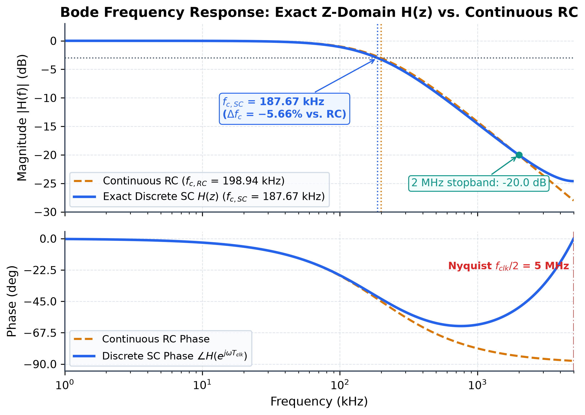
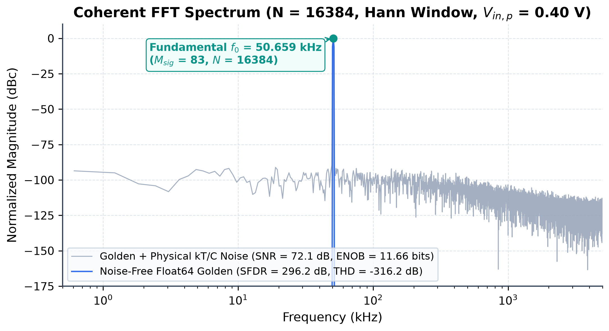
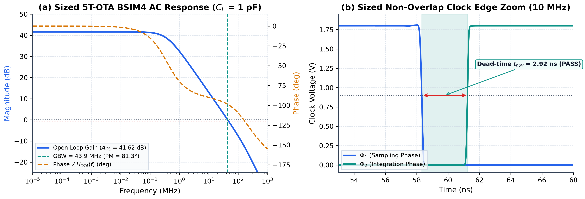

Behavioral Modeling, Error Budgeting & gm/ID Transistor Sizing
Mô Hình Hóa Python (Golden Model)
& Tính Toán Sizing $W/L$ Cho Sky130A
Tuần 2 giải đáp trọn vẹn 4 câu hỏi cốt lõi: Tuần 2 làm gì? $\to$ Golden Model là gì? $\to$ Python mô phỏng những gì? $\to$ Ứng dụng công thức lý thuyết nào vào Sizing?
Tuần 2 Là Gì? Tại Sao Phải Qua Bước Python Trước Khi Vẽ Schematic?
Vẽ thẳng Transistor vào Xschem/SPICE
- Khi mạch chạy sai $f_c$ hoặc méo hài, không biết do sai công thức hệ thống hay sai kích thước MOSFET.
- Mỗi lần chạy .tran toàn mạch BSIM4 tốn hàng chục giây–phút, không thể quét hàng nghìn tổ hợp $R_{\text{on}}, A_{OL}, W/L$.
- Không có mốc chuẩn đối chiếu nên dễ chấp nhận sai số ngầm.
Biến các phương trình toán Tuần 1 thành bộ mô phỏng số chính xác trên Python để xuất ra phổ chuẩn, sóng bậc thang chuẩn và tần số cắt chuẩn $187.675\text{ kHz}$.
Tiêm từng khiếm khuyết vật lý ($R_{\text{on}}$ phi tuyến, $A_{OL}$ hữu hạn, Charge Injection, $kT/C$) để tìm ngưỡng tối đa mà mạch còn đạt chuẩn.
Dùng phương pháp $g_m/I_D$ tính trọn bộ kích thước $W, L, \text{nf}, \text{mult}$ cho 4 khối rồi tự động gọi Ngspice xác minh trước khi bàn giao sang Tuần 3.
Golden Model (Mô Hình Vàng) Là Gì & Vai Trò Trong Chuỗi Thiết Kế Chip?
“Chân Lý Tham Chiếu” Độc Lập Với Transistor
Golden Model là chương trình mô phỏng thuần toán–vật lý (chính xác 64-bit Float64), chỉ giải phương trình bảo toàn điện tích $H(z)$ và các định luật vật lý cơ bản — hoàn toàn không phụ thuộc mô hình BSIM4 hay ký sinh dây.
Golden Model giống như bản thiết kế khí động học lý tưởng trong hầm gió số: nếu kết quả SPICE/Layout lệch xa Golden Model, ta biết ngay sự cố đến từ nội trở khóa, cực phụ OTA hay tụ ký sinh dây!
$f_{c,\text{Golden}} = \mathbf{187.675\text{ kHz}}$, $\text{THD} = -316\text{ dB}$ (số học) & $\text{SNR}_{kT/C} = \mathbf{72.09\text{ dB}}$ (trần nhiệt động).
Đo lưới transistor thật trên Xschem so trực tiếp với sóng bậc thang & phổ FFT của Golden Model ($+3.36\%$ đạt chuẩn!).
Ghép cả 3 đường cong (Golden, Pre-Layout, Post-Layout PEX) lên cùng một hệ trục để chứng minh chip thật sau sản xuất vẫn bảo toàn đặc tuyến.
Mô Phỏng Trên Python Là Làm Những Việc Gì? (3 Kịch Bản & 3 Tệp JSON)
- Vẽ & đối chiếu Bode $H(z)$ với $RC$.
- Chạy quá độ đa tần $50\text{ kHz}+2\text{ MHz}$.
- Chạy Coherent FFT $N=16384$ (có/không $kT/C$) xuất metrics_golden.json.
- Quét $R_{\text{on}}$ phi tuyến ($0.3\to 100\text{ k}\Omega$) đo méo hài động Track-and-Hold.
- Quét $A_{OL}$ ($10\to 70\text{ dB}$) đo sai số DC & dịch cực.
- Tìm điểm ngọt kích thước TG ($W_n/W_p$).
- Tính tay $g_m/I_D$ giải cứu quỹ áp `ota_5t`.
- Chốt bảng $W, L, \text{nf}, \text{mult}$ cả 4 khối.
- Tự sinh netlist gọi Ngspice BSIM4 tiền kiểm chứng trước Tuần 3.
Ứng Dụng Những Công Thức Lý Thuyết Nào Vào Mô Phỏng Trên Python?
| Lý thuyết & Công thức Gốc (Tuần 1) | Hàm / Thuật toán Python (python/*.py) | Kết quả Định lượng Thu được |
|---|---|---|
| 1. Hàm truyền miền $\mathcal{Z}$: $H(e^{j\omega T}) = \frac{\alpha}{1-(1-\alpha)e^{-j\omega T}}$ | freq_response_sc() + arccos(143/144) | $f_{c,\text{SC}} = \mathbf{187.675\text{ kHz}}$ ($-5.66\%$ vs $RC$) |
| 2. Bảo toàn điện tích: $V_{\text{out}}[n] = \frac{8}{9}V_{\text{out}}[n-1]+\frac{1}{9}V_{\text{in}}[n]$ | scipy.signal.lfilter([1/9],[1,-8/9], x) | Sóng bậc thang ZOH, nén $2\text{ MHz}$ đi $10.03\times$ |
| 3. Lấy mẫu đồng bộ & Hann: $f_0 = \frac{M}{N}f_{\text{clk}}, \gcd(M,N)=1$ | rfft(v_ac*hann(16384)) / ENBW(1.5) | $\text{SFDR}=296.2\text{ dB}, \text{THD}=-316.2\text{ dB}$ (0 rò phổ) |
| 4. Nhiễu nhiệt 2 pha: $\sigma_{\Phi_1}^2=\frac{k_BT}{C_1},\ \sigma_{\Phi_2}^2=\frac{k_BT}{C_{\text{eq}}}$ | simulate_ktc_sc_filter() → $k_BT/C_2$ | $v_n = 72.0\ \mu\text{V}_{\text{rms}}$, $\text{SNR} = \mathbf{72.09\text{ dB}}$ ($11.66\text{ b}$) |
| 5. Bám mẫu phi tuyến: $\tau(V) = R_{\text{on}}(V)C_1$, $N_{\text{sub}}=24$ | simulate_nonlinear_ron_thd() | $R_{\text{on}} < 5\text{ k}\Omega \implies \text{THD} = \mathbf{-105.1\text{ dB}}$ |
| 6. Đệm hồi tiếp hữu hạn: $A_{\text{buf}} = \frac{A_{OL}}{1+A_{OL}}$, Miller $C_{\text{in}}$ | sweep_aol() (10 → 70 dB) | $A_{OL} \ge 40\text{ dB} \implies \epsilon_A = 0.99\%, |\Delta f_c| = 0.94\%$ |
| 7. Tiêm điện tích & Xuyên xung: $\Delta V_{\text{CI}}, \Delta V_{\text{CF}}$ | sweep_charge_injection() ($W_n: 0.8\to 16$) | Điểm ngọt $4/12\ \mu\text{m}$: $2.26\text{ k}\Omega$, $0.77\text{ mV}$ (+DUM) |
| 8. Định cỡ vùng trung bình: $g_m = (g_m/I_D)\cdot I_D$, $\text{GBW}=\frac{g_m}{2\pi C_L}$ | sizing_calc.py + ngspice -b verify | $A_{OL}=41.6\text{ dB}, \text{GBW}=43.9\text{ MHz}, \text{PM}=81.3^\circ$ |
Ứng Dụng Hàm Truyền $H(z)$ Để Giải Nghiệm Cắt Rời Rạc Chính Xác
- Công thức FC_RC $= \frac{1}{2\pi R_{\text{eq}} C_2} = \mathbf{198.944\text{ kHz}}$.
- Hạn chế: Coi điện tích truyền liên tục vô hạn bước nhỏ, bỏ qua bản chất lấy mẫu rời rạc chu kỳ $T_{\text{clk}} = 100\text{ ns}$.
- Python quét lưới logarit $2000$ điểm từ $1\text{ kHz} \to 5\text{ MHz}$ (f_clk/2).
- Tính chính xác $f_{c,\text{SC}} = \mathbf{187.675\text{ kHz}}$ (lệch $-5.664\%$).
Đồ Thị Bode: Hàm Truyền Rời Rạc $H(z)$ vs. $RC$ Liên Tục

$f_{c,\text{SC}} = \mathbf{187.675\text{ kHz}}$ thấp hơn $f_{c,\text{RC}} = 198.944\text{ kHz}$ do chia điện tích song song $C_1 \parallel C_2$ ($p_{\text{SC}} = 8/9 = 0.8889$).
Dải thông $50\text{ kHz}$ chỉ suy hao $\mathbf{-0.298\text{ dB}}$, trong khi nhiễu $2\text{ MHz}$ bị nén $\mathbf{-20.02\text{ dB}}$ (giảm $10.03\times$ biên độ).
Tại $f_{\text{clk}}/2 = 5\text{ MHz}$ ($z = -1$), biên độ dừng ở $-24.61\text{ dB}$ ($1/17$) và pha quay về $0^\circ$ đặc trưng hệ rời rạc.
Mô Phỏng Quá Độ Đa Tần: Giải Phương Trình Sai Phân & Bậc Thang ZOH
- Chuyển về tọa độ AC $x = V_{\text{in}}[n] - 0.9\text{ V}$, giải bằng scipy.signal.lfilter([1/9], [1, -8/9], x).
- 50 kHz: giữ $289.9\text{ mV}_p$ ($96.6\%$); 2 MHz: nén $120 \to \mathbf{11.97\text{ mV}_p}$.
Dạng sóng ra là bậc thang giữ mẫu bậc không (ZOH, $T_{\text{clk}} = 100\text{ ns}$). Do đó ở Tuần 3, ta phải trích mẫu Ngspice đúng tại cuối pha $\Phi_2$ ($t_n = nT_{\text{clk}} + 98\text{ ns}$) sau khi OTA xác lập xong!

Cách Ứng Dụng Lý Thuyết Coherent Sampling & Nhiệt Động $kT/C$ Vào Python
- Loại bỏ quá độ: Bỏ $2048$ chu kỳ đầu ($(8/9)^{2048} < 10^{-100}$).
- Nguyên tố cùng nhau: $\gcd(83, 16384) = 1$ để mọi mẫu nằm ở pha khác nhau trên chu kỳ sóng, không trùng bin hài.
- Cửa sổ Hann chuẩn hóa: Chia cho ENBW = 1.5 để tích phân chính xác công suất sóng hài $H_2..H_7$ (kể cả hài gập Nyquist).
- Pha $\Phi_1$: khóa `TG1` lấy mẫu nhiễu phương sai $k_BT/C_1$ lên $C_1$.
- Pha $\Phi_2$: khóa `TG2` đóng thêm nhiễu vòng $C_1 \parallel C_2$ ($C_{\text{eq}} = \frac{C_1 C_2}{C_1+C_2}$).
- Chứng minh giải tích đẳng phân năng lượng: $\text{Var}(V_{\text{out}}[\infty]) \equiv \frac{k_B T}{C_2}$!
Phổ Coherent FFT ($N = 16384$, Hann) & Mốc Chuẩn metrics_golden.json

Biên độ đỉnh ra: $V_{\text{out,rms}} = 273.06\text{ mV}$ ($\text{SNR}_{\text{lý thuyết}} = 71.58\text{ dB}$).
| Chỉ số Phổ | Float64 Lý tưởng | Kèm nhiễu $kT/C$ |
|---|---|---|
| SNR (dB) | 288.69 | 72.09 |
| SNDR (dB) | 288.68 | 71.95 |
| SFDR (dB) | 296.20 | 90.44 |
| THD (dB) | −316.22 | −86.87 |
| ENOB (bits) | 47.66 | 11.66 |
Mô Phỏng Nội Trở Phi Tuyến $R_{\text{on}}(V)$: Lý Giải Ngưỡng $R_{\text{on}} < 5\text{ k}\Omega$
- Bài toán Nạp Tĩnh ($\epsilon_{\text{set}} < 0.1\%$): Trong $t_{\text{on}} = 47\text{ ns}$, giải $e^{-47\text{ ns}/(R_{\text{on}}C_1)} < 10^{-3}$ chỉ cần $R_{\text{on}} < 68.04\text{ k}\Omega$.
- Bài toán Bám Mẫu Động ($V_{\text{in}}(t)$ biến thiên): Khóa `TG1` có đường cong chuông Body Effect đo từ Sky130A: $$R_{\text{on}}(V) = \frac{R_{\text{peak}}}{1 + 4.8\left(\frac{V - 0.965}{0.40}\right)^2}$$
- Độ trễ bám mẫu $\Delta V_{\text{track}} \approx -R_{\text{on}}(V_{\text{in}}) C_1 \frac{dV_{\text{in}}}{dt}$ làm biến dạng sóng hình sin thành hài bậc 3 ($ ext{HD}_3$)!
tau1 = r_tg(0.5*(v_src + v_c1)) * C1
v_c1 = v_src + (v_c1 - v_src)*exp(-dt/tau1)
- Kiểm tra tại sát biên dải thông $f_{\text{in}} = \frac{73}{4096}f_{\text{clk}} = \mathbf{178.22\text{ kHz}}$, $A_{\text{in}} = 0.40\text{ V}$.
- Tại $R_{\text{peak}} = 60\text{ k}\Omega$: $\text{THD}$ xấu tới $-61.6\text{ dB}$.
- Tại ngưỡng chốt $R_{\text{peak}} = 5.0\text{ k}\Omega$ ($94\tau$): $\text{THD} = \mathbf{-105.1\text{ dB}}$!
- Tại cấu hình `TG 4/12 µm` ($2.26\text{ k}\Omega$): $\text{THD} = \mathbf{-148.9\text{ dB}}$ (vô hiệu hóa hoàn toàn méo bám mẫu).
Mô Hình Hóa Độ Lợi Hữu Hạn $A_{OL}$ & Tìm Điểm Ngọt Kích Thước Khóa TG
- Quét $A_{OL} \in [10\text{ dB}, 70\text{ dB}]$ đánh giá cả sai số đệm DC và độ dịch điểm cực SC.
- Tại $A_{OL} = 35\text{ dB}$ ($56.2\text{ V/V}$): $\epsilon_A = 1.75\%$, dịch cực $1.65\%$.
- Tại ngưỡng chốt $A_{OL} \ge 40\text{ dB}$ ($100\text{ V/V}$): sai số biên độ hạ còn $0.99\%$ ($0.086\text{ dB}$) và dịch cực chỉ $0.94\% \ll 5\%$.
- Quét $W_n \in [0.8, 16.0]\ \mu\text{m}$ (giữ tỷ lệ bù $W_p = 3 W_n$, $L = 0.15\ \mu\text{m}$) dùng hằng số BSIM4 thực đo ($C_{ox,n}=8.325, C_{ox,p}=8.163\text{ fF}/\mu\text{m}^2$).
- Điểm ngọt ($W_n/W_p = 4/12\ \mu\text{m}$, diện tích $2.4\ \mu\text{m}^2$): $R_{\text{peak}} = 2.26\text{ k}\Omega < 5\text{ k}\Omega$, $\Delta V_{\text{CI}}(V_{\text{out}}) = 3.84\text{ mV}$ (chỉ còn $\mathbf{0.77\text{ mV}}$ khi bù Dummy $W/2$).
Quét Phi Lý Tưởng: Nội Trở $R_{\text{on}}$, Độ Lợi $A_{OL}$ & Charge Injection

Xác lập tĩnh $<0.1\%$ chỉ cần $68\text{ k}\Omega$, nhưng chốt $<5\text{ k}\Omega$ để giữ méo hài bám mẫu động $\text{THD} < -105\text{ dB}$.
Giữ sụt độ lợi DC $\epsilon_A = 0.99\%$ ($0.086\text{ dB}$) và độ lệch tần số cắt $|\Delta f_c / f_c| = 0.94\% \ll 5\%$.
Đạt $R_{\text{on,peak}} = 2.26\text{ k}\Omega$ với $\Delta V_{\text{CI}}(V_{\text{out}}) = 3.84\text{ mV}$ (còn $\mathbf{0.77\text{ mV}}$ khi bù Dummy $W/2$).
Phương Pháp $g_m/I_D$ Giải Bài Toán Quỹ Áp 5T-OTA Trên Sky130A
Tại sao Định luật Bình phương Cổ điển thất bại?
- `nfet_01v8` có $V_{TH,n} \approx 0.63\text{–}0.68\text{ V}$. Nếu chọn vùng nghịch đảo mạnh ($V_{ov1} \approx 0.20\text{ V} \implies V_{GS1} \approx 0.85\text{ V}$), thì $V_{\text{tail}} \approx 0.05\text{ V}$ làm `M5` rơi ngay khỏi bão hòa tại $V_{CM}=0.9\text{ V}$!
- Nếu dùng kênh ngắn $L = 0.15\ \mu\text{m}$, $r_o$ quá nhỏ không thể đạt $A_{OL} > 40\text{ dB}$.
Nghịch Đảo Trung Bình ($g_m/I_D = 20.5\ \text{V}^{-1}$) + $L = 0.8\ \mu\text{m}$
- `M1, M2` ($32 / 0.8\ \mu\text{m}$, `nf=8`): Hạ $V_{GS1} = 0.662\text{ V} \implies V_{\text{tail}} = \mathbf{237.5\text{ mV}}$.
- `M5, M6` ($24 / 1.0\ \mu\text{m}$, `nf=6`): Giữ $V_{dsat5} = 100.8\text{ mV}$ (dư bão hòa $+136.8\text{ mV}$).
- Đồng nhất ngón: Cả `M1–M6` dùng $W_{\text{finger}} = 4.0\ \mu\text{m}$ cho Layout ABBA Tuần 4.
Cách Chốt Kích Thước Xung Không Chồng Lấn, Khóa TG & Ô Tụ MIM Đơn Vị
Chuỗi Trễ Kênh Dài $L=0.95\ \mu\text{m}$
- Chốt `NAND2`: $W_n=1.6, W_p=2.0\ \mu\text{m}$ (2 NMOS nối tiếp tăng $W_n$ để cân bằng sườn kéo xuống).
- 6 cổng đảo trễ `XDEL1..6`: Số tầng chẵn giữ nguyên cực tính, tăng chiều dài kênh $L = 0.95\ \mu\text{m}$ giảm dòng nạp tạo đúng $t_{\text{nov}} = 2.92\text{ ns}$ rất gọn diện tích.
- Đệm xuất `XBUF`: $W_n/W_p = 2/6\ \mu\text{m}$ (`nf=2`) cho sườn dốc $< 200\text{ ps}$.
Bù Độ Linh Động $W_p / W_n = 3$
- Dùng chiều dài kênh ngắn nhất $L_{\min} = 0.15\ \mu\text{m}$ để giảm điện tích kênh $Q_{\text{ch}} \propto L$ và giảm $R_{\text{on}}$.
- Bề rộng PMOS gấp $3\times$ NMOS ($4/12\ \mu\text{m}$ ở Tuần 2) để cân bằng $\mu_n/\mu_p \approx 2.7$ và ngưỡng $|V_{TH,p}|$ cao.
- Dự phòng: Kèm cặp khóa giả `XDUM1,2` ($W/2$, nối tắt D–S) để kiểm chứng triệt gai.
Bù Độ Xói Biên $dw = 0.15\ \mu\text{m}$
- Chọn $W_{\text{eff}}=5.00\ \mu\text{m}, L_{\text{eff}}=10.00\ \mu\text{m} \implies$ kích thước vẽ $4.85 \times 9.85\ \mu\text{m}$.
- Chẵn bước lưới Magic $0.05\ \mu\text{m}$ ($5\text{ nm}$ grid clean).
- $C_1$: `mult=1` ($100\text{ fF}$); $C_2$: `mult=8` ($800\text{ fF}$).
Tiền Kiểm Chứng Ngspice BSIM4: Đáp Ứng 5T-OTA & Xung Không Chồng Lấn

Bảng Sizing $W/L$ Khối Xung Nhịp, Khóa TG & Lõi Tụ MIM
| Khối chức năng | Phần tử | Linh kiện Sky130A | $W$ ($\mu\text{m}$) | $L$ ($\mu\text{m}$) | nf / mult | Vai trò Thiết kế |
|---|---|---|---|---|---|---|
| 1. non_overlap_clk | XINV_IN | nfet / pfet_01v8 | 1.0 / 2.5 | 0.15 | 1 / 1 | Đảo pha & làm sắc xung $10\text{ MHz}$ |
| XNAND_A, B | nfet / pfet_01v8 | 1.6 / 2.0 | 0.15 | 1 / 1 | Chốt chéo NAND2 cân bằng sườn | |
| XDEL1..6 (×2) | nfet / pfet_01v8 | 0.6 / 1.5 | 0.95 | 1 / 1 | 6 cổng NOT trễ tạo $t_{\text{nov}} = 2.92\text{ ns}$ | |
| XBUF1, 2 | nfet / pfet_01v8 | 2.0 / 6.0 | 0.15 | 2 / 1 | Đệm xuất $\Phi_1, \overline{\Phi_1}, \Phi_2, \overline{\Phi_2}$ | |
| 2. tg_switch | XTG1, XTG2 | nfet / pfet_01v8 | 4.0 / 12.0 → 2.0 / 6.0* | 0.15 | 2,4 → 1,2 | Tuần 2: $2.26\text{ k}\Omega$; Tuần 3 tinh chỉnh giảm $C_{\text{par}}$ |
| XDUM2 | nfet / pfet_01v8 | 1.0 / 3.0 | 0.15 | 1 / 1 | Khóa giả $W/2$ đặt tại `VX` triệt tiêm điện tích | |
| 3. sc_core | XC1 / XC2 | cap_mim_m3_1 | 4.85 | 9.85 | mult = 1 / 8 | $100.00\text{ fF}$ & $800.00\text{ fF}$ ($1:8$) |
Bảng Sizing ota_5t & Kiểm Chứng Biên Bão Hòa M1–M5
| Transistor | Model | $W / L$ ($\mu\text{m}$) | nf | $|V_{DS}| - V_{dsat}$ |
|---|---|---|---|---|
| XM1 (In+) | nfet_01v8 | 32.0 / 0.80 | 8 | +379.5 mV |
| XM2 (In−) | nfet_01v8 | 32.0 / 0.80 | 8 | +593.0 mV |
| XM3 (Diode) | pfet_01v8 | 16.0 / 0.80 | 4 | +970.7 mV |
| XM4 (Mirror) | pfet_01v8 | 16.0 / 0.80 | 4 | +758.0 mV |
| XM5, XM6 | nfet_01v8 | 24.0 / 1.00 | 6 | +136.8 mV |
- Điện áp ngõ ra tĩnh: $V_{\text{out}} = \mathbf{0.8982\text{ V}}$.
- Sai số DC Offset hệ thống: $\mathbf{-1.85\text{ mV}}$.
- Điện áp nút đuôi: $V_{\text{tail}} = \mathbf{0.2375\text{ V}}$.
- Tốc độ quét ước tính: $\text{SR} = \mathbf{28.16\text{ V}/\mu\text{s}}$.
Cả 6 transistor `XM1–XM6` đều có bề rộng ngón đơn vị $W_{\text{finger}} = 4.00\ \mu\text{m}$ chẵn, cho phép xếp chồng đối xứng tâm ABBA (`M1-M2-M2-M1`) không lệch bước cổng Poly.
Cầu Nối Tự Động Hóa: Golden Model Python $\leftrightarrow$ Ngspice Tuần 3
Tổng Kết Cổng Kiểm Định Tuần 2 & Bàn Giao Sang Tuần 3
| Deliverable / Tiêu chuẩn Gate 2 | File Xuất Thực Tế | Chỉ Số Định Lượng Đã Chốt | Kết quả |
|---|---|---|---|
| 1. Golden Model & Coherent FFT | python/metrics_golden.json | $f_{c,\text{SC}} = 187.675\text{ kHz}$, $\text{SNR}_{kT/C} = 72.09\text{ dB}$, $\text{ENOB} = 11.66\text{ b}$ | PASS |
| 2. Ngân sách Phi lý tưởng | python/nonideal_budget.json | $R_{\text{on}} < 5\text{ k}\Omega$ ($\text{THD} = -105\text{ dB}$), $A_{OL} \ge 40\text{ dB}$ ($\epsilon_A < 1\%$) | PASS |
| 3. Bảng Sizing $W/L$ 4 Khối | python/sizing_table.json | $A_{OL} = 41.62\text{ dB},\ \text{GBW} = 43.9\text{ MHz},\ \text{PM} = 81.3^\circ,\ t_{\text{nov}} = 2.92\text{ ns}$ | PASS |
| 4. Bộ Đồ Thị Hội Nghị 300 DPI | slides/figs/week2_*.png (5 bộ) | Bode, Multi-tone ZOH, Coherent FFT, Budgets & OTA/Clk | PASS |
| 5. Hồ sơ & Slide Báo cáo Tuần 2 | slides/week2_slides.html | 20 Slides dẫn dắt Socratic + Công thức Python + Speaker Notes | READY |